4.RESOUDRE L'EQUATION.
La situation est complexe : Le serial est un nombre composite de la forme num1-num2. Les deux valeurs num1 et num2 sont testées indépendamment l'une de l'autre. La première , num1, nécessite un sha-1 sur le NOM. La seconde, num2, n'a besoin que du NOM lui-même.
4.1 Fonction de hashage : SHA-1.
A la base, la cryptographie fût inventée afin de "crypter" des messages pour qu'il ne puissent être lus que par des personnes abilitées. Dans le monde des protections logicielles, l'une des techniques la plus utilisée est celle des fonctions de hashage.
La fonction de hashage est choisie de façon à ne pas être inversible, ou à défaut, à être difficilement inversible. Autrement dit, si nous disposons d'un hash h, il ne doit pas être possible dans un temps raisonnable de trouver un message m tel que f(m) =h. Cependant, comme elle peut prend en entrée un nombre infini de chaines et qu'elle propose en sortie un nombre fini de chaines, elle est forcément non injective, c'est à dire qu'il existe plusieurs messages qui ont le même hash.( f(m) = f(m') = h ) La fonction doit donc être "resistante" à ce qu'on appelle des collisions, c'est à dire qu'il doit être difficile de trouver deux messages dans un temps raisonnable qui ont le même hash.
Dans notre situation, nous sommes confrontés à l'utilisation d'une des fonctions de hashage les plus courantes : le SHA-1. On peut détecter sa présence dans le binaire en utilisant PEID et son plugin "Krypto ANALyser" comme vous pouvez le voir ci-dessous.
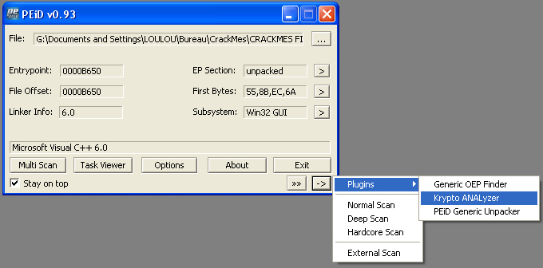
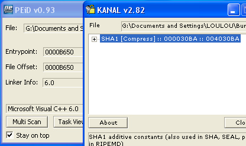
Conçu par le NSA, SHA-1 (Secure Hash Algorithm) est une fonction de hashage de 160 bits (5 DWORDs, soit 20 octets). Elle donne donc pour chaque message une chaine de 20 octets. A ce jour, SHA-1 n'a pas de failles connues et se trouve donc être l'une des fonctions de hashage les plus sûres.
Pamplemousse utilise le SHA-1 en prenant comme entrée le NOM saisi. Le digest obtenu est alors utilisé dans l'équation pour tester la validité du serial. Ceci signifie qu'au moment de l'implementation du keygen, il y aura une difficulté supplémentaire puisque nous serons forcés de calculer le SHA-1 du NOM. Par contre, pour ce qui est de la compréhension de l'algorithme et de son reversing théorique, les fonctions de hashage ne posent en soi aucune difficulté.
4.2 Déterminer Num1 : Etude théorique.
La routine qui vérifie la valeur num1 est bien trop longue pour apparaître désassemblée ici. Voici néanmoins un aperçu du début de celle-ci (vous remarquerez la phase de création des bignums) :
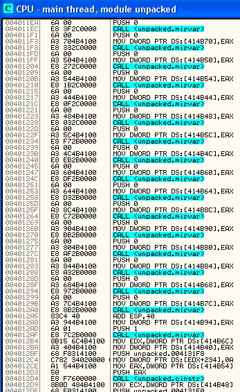
Commençons donc le travail pour calculer la première partie du serial.A toute fin utile,je rappelle l'équation qu'il faut résoudre. Si nous appelons X la valeur de Num1, nous obtenons donc l'équation (1):
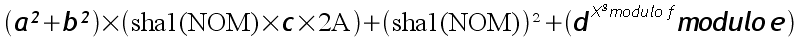
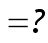
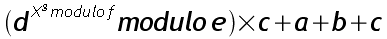
Les valeurs a,b,c,d,e,f,g sont fixées dans le binaire et valent (en décimal):
a = 12804348580793685654912532613241037593020279611257382400876269601574457213193643600884093533047568949932 7039615143671236821225 b = 10780621683367775385651185060492079067357008334308685202528017228752081818347567422628680014295659856641 6789699619346519131157489 c = 126374750002268624037501633220404518782674114480658933505173173047 d = 1248310966923498661164204883260437277137373139593887776277032788073 e = 3208758980294089871636889325639601519765013105042818745876534106523 f = 4109509431769244994089516623957980949881759417131294476885470163057 g = 65793
Pour résoudre une telle équation, nous devons décomposer le travail en trois étapes. Par un simple jeu de substitution, nous pouvons scinder cette équation en trois équations simples : une équation linéaire de degré 1, un logarithme discret et une racine nième. Voici comment procéder :
4.2.1.EQUATION LINEAIRE
Effectuons une simple substitution :
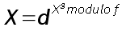
L'équation (1) devient alors une simple équation linéaire de degré 1 modulaire de la forme :
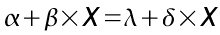
On la résoud aisément en calculant des inverses et des opposés (on ne s'inquiète pas de l'existence de telles valeurs, on se doute a priori qu'elles existent :) ) ce qui nous donne comme solution :
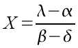
4.2.2.PROBLEME DU LOGARITHME DISCRET (DLP)
Maintenant que nous connaissons X, nous devons trouver Y dans l'équation :
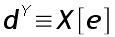
Trouver la valeur de Y connaissant d dans l'ensemble Z/eZ* (e étant un nombre premier) s'appelle un problème de logarithme discret (DLP pour les anglophones). Si le modulo e est très grand (2000 bits voire 4000 bits, c'est à dire 125 DWORDs !), le problème devient complètement insoluble dans l'état de nos connaissances actuelles.(Ce principe fût utilisé pour la première fois dans le protocole Diffie-Hellmann). En ce qui nous concerne, le modulo e n'est pas très grand puisqu'il n'a que 221 bits.
e = 3208758980294089871636889325639601519765013105042818745876534106523
Je signale au passage que e est bien un nombre premier, il suffit de tester sa primalité à l'aide d'un tool de calcul, par exemple, la BigCalto de Bigbang, que vous pouvez obtenir moyennant un petit clic ICI.
Le seul moyen d'obtenir ce Y reste donc de bruteforcer en testant les valeurs de Y les unes après les autres. Néanmoins, une étude exhaustive naïve risque de prendre des semaines ! Heureusement pour nous, il existe des algorithmes qui permettent de bruteforcer un logarithme discret de façon intelligente et rapide. (si e est petit bien sûr !!). Je vais utiliser une implémentation proposée par MIRACL lui-même de la méthode de pohlig-Hellman.
Méthode de Pohlig-Hellman
Cette méthode s'avère être rapide dans le cas particulier où l'ordre du groupe Z/eZ* se décompose en facteurs premiers de petite taille. Ces nombres sont appelés nombres friables (smooth numbers). (On dit qu'un nombre est y-friable si ses facteurs sont inférieurs à y).
La routine proposée nécessite donc au préalable une décomposition en facteurs premiers de e-1 (ordre de Z/eZ*). Dans notre cas, la décomposition nous amène à ceci :
e-1 = 3208758980294089871636889325639601519765013105042818745876534106522 e-1 = 2 × 5751247 × 81514567 × 273749507 × 2255442769 × 85717369999 × 254289208463 × 254289209159
Les facteurs premiers obtenus sont de petite taille et tous distincts. La routine calcule ensuite les xi = x mod [pi] en utilisant la méthode Rho de Pollard sur les groupes Z/piZ*. Pour finir, elle calcule x en utilisant le théorème des restes chinois (CRT) sur les xi/pi (implémentée grâce à l'agorithme de Gauss). Pour les détails techniques, je vous renvoie au HoAC (Handbook of Applied Cryptography by A. Menezes, P. van Oorschot and S. Vanstone. - Chapitre 3 - 3.6.4 - page 107 ).
4.2.3.Racine nième modulaire : protocole à clé publique RSA.
Maintenant que nous disposons de Y, il ne nous reste plus qu'à trouver notre fameux Num1, qui sera représenté par Z dans l'équation :
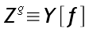
avec :
f = 4109509431769244994089516623957980949881759417131294476885470163057 g = 65793
De prime abord, l'idée la plus simple qui vienne à l'esprit est de trouver n, inverse de 65793 ce qui nous permet de trouver Z tout de suite :
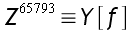 donc 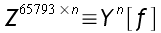 donc 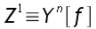
Nous sommes en fait dans une situation très connue puisque nous sommes en présence du protocole à clés publiques RSA. Heureusement pour nous, le RSA est inviolable si f est très grand (2048 bits par exemple soit 256 chiffres) or ici, f ne fait que 222 bits soit 28 chiffres.
Attaquer un RSA 222 :
Voici donc comment résoudre un problème type RSA, c'est à dire comment trouver Z dans l'équation :
L'idée de départ est donc de trouver n et t tels que :
n x 65793 = 1 modulo t
Dans ce cas, nous avons presque notre Z :
donc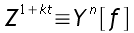 donc donc
Si nous voulons Z, nous devons nous débarrasser du Z à la puissance t, c'est à dire que nous devons avoir une condition sur t :
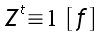 (*)
Déterminer t : factoriser f
L'équation précédente ressemble fort à celle annoncée par le petit théorème de Fermat. Malheureusement, ce dernier ne nous propose que ceci :
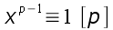 pour p premier et pgcd(x,p)=1
Or,ici, f n'est pas premier (test de primalité avec BigCalto). En réalité, on peut se sortir de ce mauvais pas en factorisant f. C'est là que l'idée du RSA est géniale : Si f est trop grand, la factorisation ne pourra pas se faire dans un temps humainement raisonnable. Pour notre f (222 bits), j'ai utilisé PARI/GP et il m'a fallu une heure de bruteforce pour trouver le résultat suivant :
f = 4109509431769244994089516623957980949881759417131294476885470163057 f = 1964194606471413210463812049765307 x 2092210933799371772034926685453251 f = p1 x p2
A partir de là, tout devient clair, l'équation (*) implique :
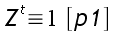 et 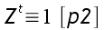
Or , d'après le petit théorème de Fermat, l'ordre de tout nombre de Z/p1Z et Z/p2Z et respectivement p1-1 et p2-1 :
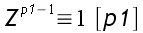 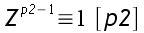
donc, p1-1 et p2-1 divisent t. Nous n'avons alors que l'embarras du choix pour t. Prenons la plus petit valeur possible, soit le ppcm(p1-1,p2-2). En utilisant FACTORIS, on obtient :
p1-1 = 1964194606471413210463812049765306 p2-1= 2092210933799371772034926685453250 t = ppcm (p1-1,p2-1) = 2054754715884622497044758311978988446738109573173155989073367472250
Déterminer n
Il ne nous reste plus qu'à trouver n dans l'équation :
n x 65793 = 1 modulo t
Il suffit donc de trouver (L'existence est facile à déterminer puisqu'il est facile de voir que pgcd(65793,t)=1) l'inverse de 65793 modulo t. . On exhibe cette valeur grâce à la BigCalto :
inv = 1938701814751868903212309238562151988937449697899016678578381173907
Calculer Z
Pour finir :
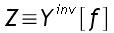
Si nous prenons comme nom BeatriX, la valeur pour Z (i.e num1) sera :
Z = 2744153565088908422105028384264788029708588008084322414280384448738
Notre serial est donc de la forme 2744153565088908422105028384264788029708588008084322414280384448738-num2.
4.3. Calculer Num2
Le binaire teste aussi la valeur num2. On peut voir le début de la routine en 401378 :
unpacked:00401378 loc_401378: unpacked:00401378 mov ecx, ds:dword_414B40 unpacked:0040137E movsx edx, al unpacked:00401381 push ecx unpacked:00401382 push edx unpacked:00401383 push ecx unpacked:00401384 call _premult unpacked:00401389 mov al, [edi+1] unpacked:0040138C add esp, 0Ch unpacked:0040138F inc edi unpacked:00401390 test al, al unpacked:00401392 jnz short loc_401378
Le NOM est donc récupéré lettre par lettre et les valeurs ascii hexa de celles-ci sont multipliées entre elles. Par exemple, pour BeatriX, on obtient le calcul suivant :
num2 (base 16) = 42h x 65h x 61h x 74h x 72h x 69h x 58h = 47DB844F3D80h num2 (base 9) = 340662740253330
Le binaire fait ce travail en base 9, le SERIAL pour BeatriX sera donc :